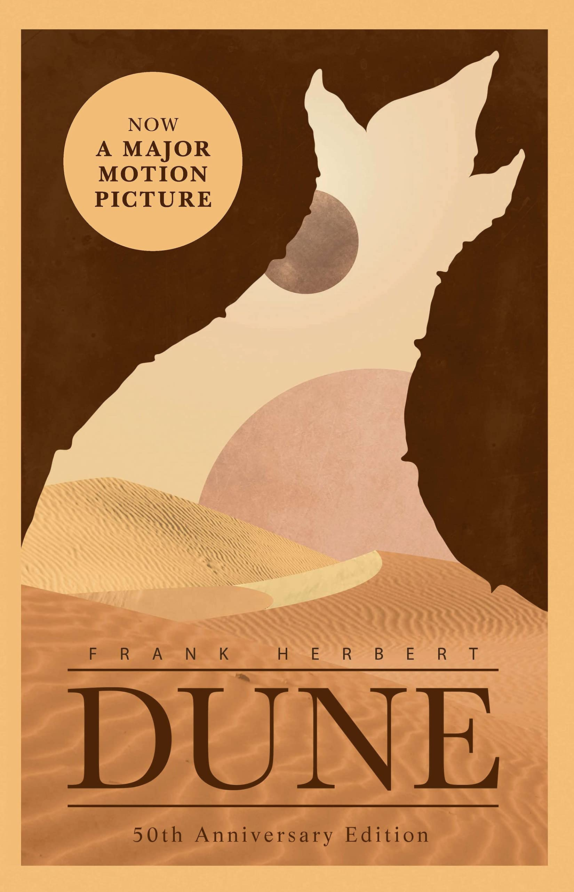
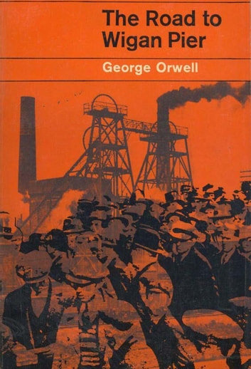
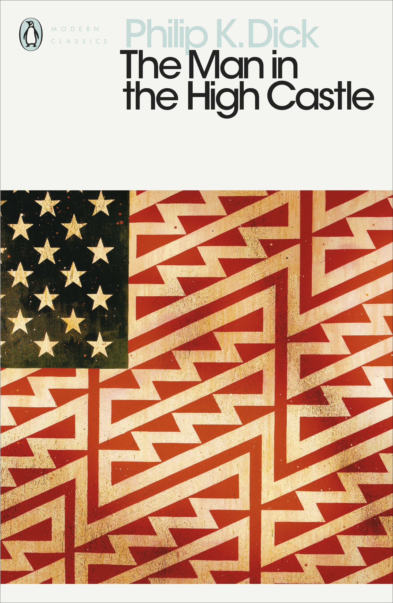
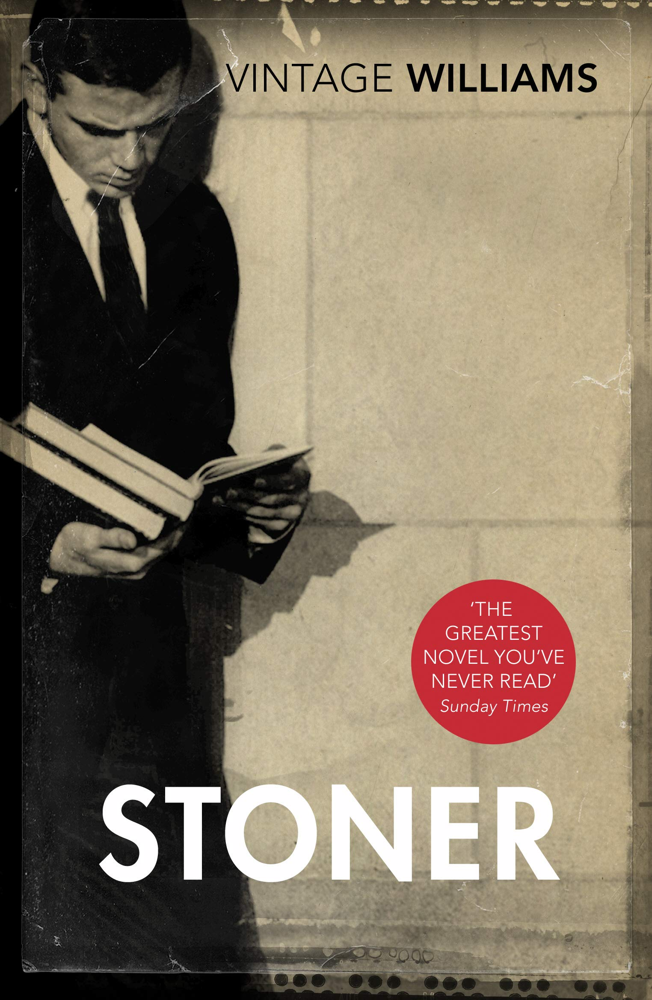
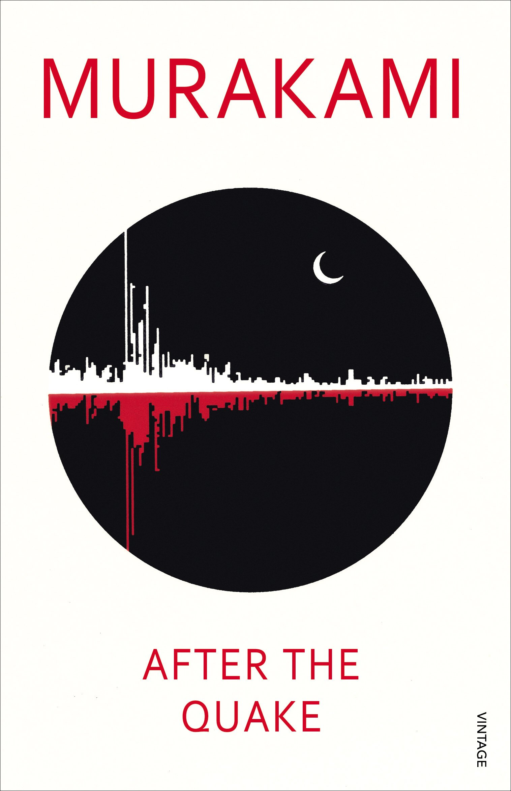
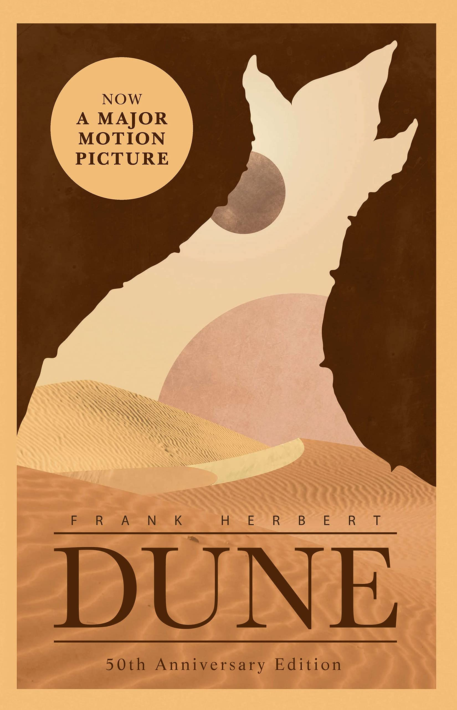

-
Favourite Authors
Featured Reads:
-

Dune
Frank Herbet


No other single syllable means as much to the science fiction genre, a single word that conjures images of sandworms, spice wars, great battles between rival dynastic families and a massively detailed and intricately crafted universe. No wonder this is widely regarded as not just a Science Fiction masterpiece, but a literary achievement as well.
-

The Road To Wigan Pier
George Orwell
This book has tremendous value has an historical document in that it is an extremely well documented book about the squalid living conditions of the British Working Class before the advent of the modern welfare state. It does not describe today's world and hence no longer relates to current political issues.
-
Chernobyl Prayer
Svetlana Alexievich
Svetlana Alexievich captures the suffering of ordinary people of all walks of life, as well as that of professional staff sent to Chernobyl to deal with the crisis immediately after it happened. She creates a social panorama of the society that was affected in its totality by the nuclear disaster.
-

The Man in The High Castle
Philip Dick
The Man in the High Castle presents a very convincing alternate history where Hitler and the Nazis, fascist Italy, and Imperial Japan had been the victors instead. The world-building is rich and Philip K. Dick doesn't neglect the little details in his fictional society.
- 
- 
-
